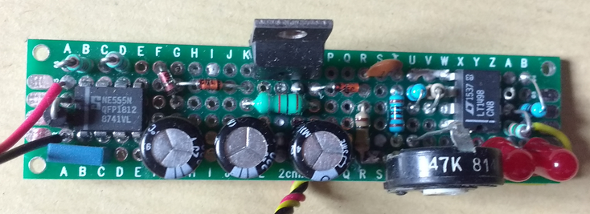
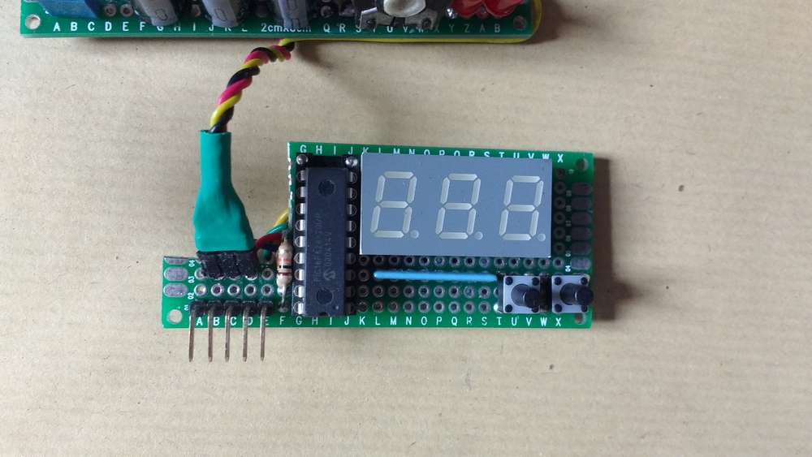

De l'aléatoire est généré à partir d'une zener bruyante, et se fait traiter par un PIC pour faire un dé !
Le circuit est alimenté en 9V, mais pour que le bruit soit bien visible, il faut une tension de zener plus grande. C'est pourquoi la première moitiée du PCB est dédiée à un montage charge pump, à base de 555. Il y a ensuite du filtrage (inductance et condensateur) pour limiter l'ondulation sur le bruit (on limite le bruit sur le bruit, un comble !), ainsi qu'un 7805 pour la partie logique.
Puis vient la zener et un condensateur bloqueur de DC (le bruit reste très faible et se fait écraser par la grande composante continue).
On a ensuite un bête ampli et un potentiomètre pour regler l'équité du signal de sortie : il faut que les deux LEDs, montées en opposé, brille de la même façon pour être équilibré.
Le signal va alors dans un PIC16F628, où en seront tirées plusieurs fonctions, comme le montre ce bout de code : typedef enum{
D2, D3, D4, D6, D10, D12, D20, D100, DEXA,
CHRONO
} MODE_t;
L'arrière n'est pas si moche que ça (j'ai fait bien pire)...